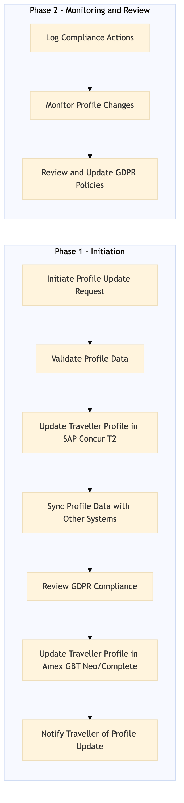

This process document outlines the steps for managing traveller profiles and ensuring GDPR compliance within the TMC Travel Programme Management domain.
| Trigger | A new traveller is added to the system or an existing traveller's profile needs updating. |
| Outcome | Traveller profiles are accurately maintained, GDPR compliance is ensured, and all relevant data is securely managed. |
| Systems | Concur T2 AWS SageMaker Kafka Snowflake Salesforce Tableau Amex GBT Neo/Complete |

Click to enlarge
| Step | Name & Pain Point | Role | System | Input | Output | KPI | Flags |
|---|---|---|---|---|---|---|---|
| 1.1 | Initiate Profile Update Request Handling large volumes of requests efficiently | Travel Manager | Concur T2 | Traveller details and update request | Profile update request logged in system | Time to log profile update request < 5 minutes | ⚠ Exception |
| 1.2 | Validate Profile Data Ensuring data quality and consistency | Data Validator | AWS SageMaker | Traveller profile data | Validated traveller profile data | Data validation accuracy > 95% | ◆ Decision |
| 1.3 | Update Traveller Profile in Concur T2 System integration and performance | System Administrator | Concur T2 | Validated traveller profile data | Updated traveller profile in Concur T2 | Profile update time < 10 minutes | ⚠ Exception |
| 1.4 | Sync Profile Data with Other Systems Real-time data synchronization | Integration Specialist | Kafka, Snowflake | Updated traveller profile data | Synchronized traveller profile data across systems | Data sync success rate > 98% | ⚠ Exception |
| 1.5 | Review GDPR Compliance Complexity of GDPR regulations | GDPR Officer | Salesforce, Tableau | Traveller profile data and GDPR compliance checklist | Compliance report | Compliance review time < 2 hours | ◆ Decision |
| 1.6 | Update Traveller Profile in Amex GBT Neo/Complete System integration and performance | System Administrator | Amex GBT Neo/Complete | Compliant traveller profile data | Updated traveller profile in Amex GBT Neo/Complete | Profile update time < 10 minutes | ⚠ Exception |
| 1.7 | Notify Traveller of Profile Update Ensuring secure communication | Travel Manager | Email System | Traveller contact information and update details | Notification email sent to traveller | Notification delivery rate > 95% | ⚠ Exception |
| 1.8 | Log Compliance Actions System performance and scalability | GDPR Officer | Salesforce, Tableau | Compliance actions taken | Logged compliance actions in system | Action logging time < 5 minutes | ⚠ Exception |
| 1.9 | Monitor Profile Changes Real-time data analysis | Data Analyst | Snowflake, Tableau | Traveller profile changes | Profile change monitoring report | Change detection accuracy > 98% | ⚠ Exception |
| 1.10 | Review and Update GDPR Policies Keeping up with regulatory changes | GDPR Officer | Salesforce, Tableau | Compliance monitoring report | Updated GDPR policies and procedures | Policy update frequency > 1 per quarter | ◆ Decision |